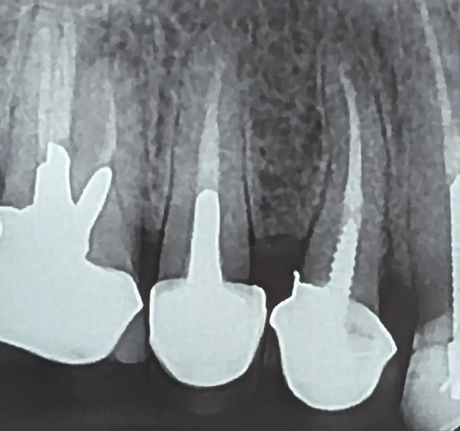
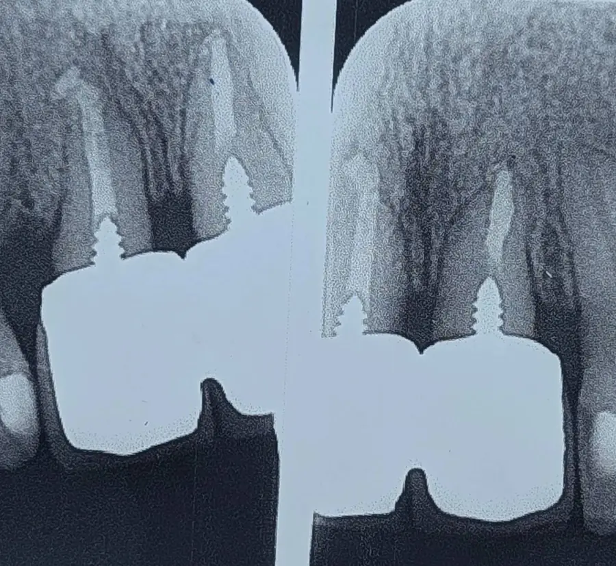

نسخه استخراجشده؛ ترجمه یا تأیید علمی انجام نشده است. وضعیت: captured
بیمار پس از چند نظر درمانی، برای تصمیم نهایی دربارهی دندان ۴ بالا سمت راست آمده است. بر پایهی پانورامیک به او کشیدن و ایمپلنت پیشنهاد شده. خودش میخواهد روکش عوض شود، چون پرسلن چیپ شده و فلز پیداست.

پانورامیک در نشان دادن جزئیات ساختاری محدودیت دارد؛ پس از ناحیه پریاپیکال گرفته شد. در پریاپیکال نشانهای از پوسیدگی ثانویهی گسترده، ضایعهی اپیکالی یا تخریب غیرمعمول ریشه نبود. تفاوت پانورامیک و پریاپیکال فقط وضوح تصویر نیست؛ سطح تصمیمی است که هر کدام میتواند پشتیبانی کند.
با این حال وضعیت دیوارهها، میزان فرول و کیفیت کور تا برداشتن روکش قطعی نمیشود. رادیوگرافی میتواند مشکلی را رد کند، اما تأیید نهایی نمیدهد.
این روکش حدود ۱۵ سال در دهان مانده و هنوز در فانکشن است. یعنی برایند همهی عوامل شناخته و ناشناخته، از کیفیت درمان اولیه و طراحی پروتز تا اکلوژن، عادات بیمار و پاسخ بیولوژیک، به بقای عملکردی رسیده است. این یک real-world clinical evidence است: جای ارزیابی مستقیم را نمیگیرد، ولی پروگنوز نگهداشتن دندان را بهطور معناداری بهتر میکند. گاهی مهمترین داده در هیچ تصویری ثبت نمیشود: زمان.
بیمار دیگری با دو سانترال قدامی آمده است: ریشههای کوتاه، احتمالاً بهدلیل تحلیل ناشی از ارتودنسی، و چند بار تعویض روکش بهخاطر نارضایتی. روکشهای قبلی به علت التهاب لثه خارج شده بودند و چون التهاب باقی ماند، برای حفظ دندانها جراحی افزایش طول تاج انجام شد. بیمار پرسیده بود «ایمپلنت گزینهی بهتری نیست؟» و شنیده بود «هیچچیز بهتر از دندان خود بیمار نیست».

نتیجه: دو روکش بلند با نسبت عرض به طول غیرطبیعی و ظاهر ناهماهنگ، در حساسترین ناحیهی زیبایی. دندانها حفظ شدهاند، ولی بیمار همچنان ناراضی است؛ گاهی آنقدر روی tooth preservation تمرکز میکنیم که این را فراموش میکنیم؛ موفقیت تکنیکی و شکست درمانی همزمان.
پرسش درست در چنین کیسی «آیا میتوان دندان را نگه داشت؟» نیست؛ این است: «آیا حفظ این دندان ارزش هزینهای را که از استخوان و معماری ناحیه میگیرد دارد؟»